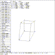
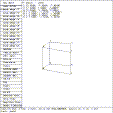
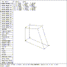

The move edge command permits the moving of a line or edge so that the line passes through the selected point.
 Figure (es8-edge1): ARB8 Edge 15 Moved Through (9, -2, -2)
mged> Select the ``edit menu'' entry in the solid edit menu
mged> Select the ``move edges'' entry in the ARB menu
mged> Select the ``move edge 15'' entry in the ARB8 edges menu
mged> p 9 -2 -2
mged>
The edge 15 is moved so that it passes through the point (9, -2, -2). The coordinates of the new points 1 and 5 are the intersection of the new edge with the planes 234 and 678. Since both the old edge and new edge 15 are parallel to the X axis, the X coordinate of the point given by the p command has no meaning. The X coordinates for points 1 and 5 are not changed. See Figure (es8-edge1) .
mged> p 9 -1 -1
mged>
This restores the original shape. The choice of ``9'' for the X coordinate was arbitrary.
 Figure (es8-edge2): ARB8 Edge 12 Moved Through (2, 5, -2)
mged> Select the ``move edge 12'' entry in the ARB8 edges menu
mged> p 2 5 -2
mged>
The edge 12 is parallel to the Y axis. This command moves the points 1 and 2 so that their X and Z coordinates are 2 and -2. See Figure (es8-edge2) . The Y coordinates are not changed.
To restore the view, enter:
mged> p 1 5 -1
mged>
The choice of ``5'' for the Y coordinate was arbitrary.
 Figure (es8-edge3): ARB8 Edge 14 Moved Through (2, -2, 7)
mged> Select the ``move edge 14'' entry in the ARB8 edges menu
mged> p 2 -2 7
mged>
The edge 14 is parallel to the Z axis. This command moves the points 1 and 4 so that their X and Y coordinates are 2 and -2. See Figure (es8-edge3) . The Z coordinates are not changed.
mged> p 1 -1 7
mged>
This restores the original shape. The choice of ``7'' for the Z coordinate was arbitrary.
{kind=link}
{kind=link}
{kind=link}